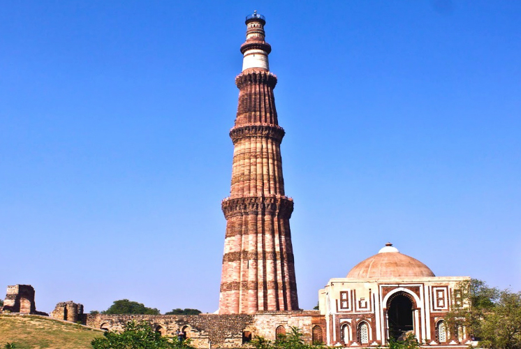

| Home |
| About Us |
| Committee |
| Themes |
| Speakers |
| Important Dates |
| Registration |
| Submission |
| Contact Us |
| Venue |

University of Delhi Delhi-110007 |
|
How to Reach Delhi University
From Airport (Indira Gandhi International Airport)
Take any Pre-paid (Ola/Uber) cab from Domestic Airport (22 km) to reach Delhi University, North Campus near Vishwavidyalaya Metro Station, which will cost around Rs. 400 - 500. One can also travel by Metro. For that take a Metro Feeder bus outside the Domestic Terminal and it will take you to Airport Express Line Metro station (Aerocity) and after taking the metro de-board at New Delhi station. Walk towards yellow line station to board the train towards Samaypur Badli / Vishwavidyalaya and then de-board at Vishwavidyalaya metro station. Amount for metro tickets would be Rs (50+30).
International Terminal (Terminal T3)
If you are coming from International Terminal (20 km), take the metro from terminal (T-3) at IGI Airport itself and follow the above-mentioned route. One can also take a Prepaid taxi or Ola/Uber Cab, which will cost around Rs. 400 - 500. Amount for metro tickets would be Rs (60+30).
To come from New Delhi Station (9.5 km), catch the metro (yellow line) going towards Samaypur Badli /Vishwavidyalaya to de-board at Vishwavidyalaya station; after exiting from Ajmeri Gate side (Platform 16). One can also take a taxi or an auto as per one's convenience; which will cost < Rs 250/- for taxi and < Rs 100/- for an auto. Amount for metro token would be: Rs 30/-
Old Delhi Railway Station
For coming from Old Delhi Station (5 km), either take a direct taxi (< Rs 250/-) or an auto (< Rs 100/-) to Delhi University Guest House, North Campus. Or take the metro (yellow line) from Chandni Chowk (nearest metro station from Platform 1) going towards Samaypur Badli / Vishwavidyalaya to de-board at Vishwavidyalaya station. Amount for metro token would be: Rs 20/-
Hazrat Nizamuddin Station
From Hazrat Nizamuddin Station (15.5 km), either take a direct taxi to Delhi University, North Campus or take a taxi (~ Rs 350 - 400) or an auto (< Rs 150/-) to the nearest metro station i.e. Indraprastha (Jangpura or JLN Stadium). From the metro station, take the metro blue line (violet line) going towards Dwarka (Mandi House / ITO) and de-board at Rajiv Chowk (Central Secretariat) metro station. Then change the metro (yellow line) going towards Samaypur Badli / Vishwa Vidyalaya to de-board at Vishwa Vidyalaya station. Amount for metro token from Indraprastha (Jangpura / JLN) Station would be: Rs 30/- (Rs 40/-).
Weather
The weather in Delhi is very pleasant and cold in November. Temperature are usually round around 20 - 30 degree Centigrade.
For more details check the weather forecast for Delhi at Yahoo, or at Weather.com.
Tourists Attractions (Delhi)
The SSCM-G20 conference is going to be held in Delhi, India. Delhi, the capital city of India is regarded as the heart of the nation. The city is popular for its enriched culture and heritage. The city hosts some famous historical monuments and is developing with the passing of time. It is a city of inexhaustible historic artistic and cultural interest.
 |
Closest metro station- Central Secretariat (Yellow line) |
|  |
Closest metro station- Qutub Minar (Yellow line) |
|
Closest metro station - Chandni Chowk (Yellow Line) |
|
|
Closest metro station- JLN stadium (Violet line) |
|
|
Closest metro station-Nehru Place (Violet Line) |
|
 |
Closest metro station- Akshardham (Blue Line) |
Nearby Places to Visit (Within 300 Kms)
Corbett National Park, Uttarakhand, India (From Delhi: 254 kilometers / 4 hrs 35 mins)
Corbett National Park, established in 1936 with the core area of 308 sq km, is one of the best wildlife resource in India and a worthy weekend getaway from New Delhi. The national park provides shelter to exotic flora and fauna. In the year 1974, the national park was the first Indian national park to inaugurate 'Project Tiger', a program initiated with the motive to save the royal predators 'tiger'. The park was formerly known as 'Hailey National Park' and later in 1955 it was renamed as 'Corbett National Park' to commemorate the diligent efforts of Jim Corbett (popular author and wildlife conservationist). The rich flora of the park expands to an area of 521 sq km, dominated by Sal forest. There also are about 488 species of flora recorded in the park. Additionally, the wildlife directory features 586 species of birds, 33 species of reptiles, 36 species of dragonflies, 7 species of amphibians and 50 species of mammals. To spot some of the amazing wildlife species in the park, there are three types of safaris, namely Jeep Safari, Elephant Safari, and Canter Safari, are available.
Agra: Agra Fort, Taj Mahal (From Delhi: 219 kilometers / 3 hrs 20 mins)

Placed on the banks of river Yamuna in the north Indian state of Uttar Pradesh, Agra is famed as a Mughal City. A perfect weekend option from Delhi, the city boasts of a glorious past and rich history. Agra is also counted as one of the most famous international holiday destinations. A heaven of Mughal architecture, art and culture, Agra is home to a number of tourist attractions, three of which are World Heritage Sites. This medieval city, today has made an amazing progress in its hospitality and infrastructure. This destination is a must-visit. Agra's history dates back to the Hindu epic Mahabharat, as Agraban, a forest of Mathura. Agra was established by Badal Singh in 1475 and was later made his capital by Sikandar Lodhi. The city is also quite popular for Peetha and Dal Moth, are 2 of the most popular local renditions. Shopping in Agra can be a delight for Shopaholics. You can get your hands on a lot of things, which you can carry as keepsakes and souvenirs.
Jaipur, Rajasthan, India (From Delhi: 269 kilometers / 4 hrs 14 mins)
Jaipur, the capital of Rajasthan, is also referred to as the 'Pink City'. Built by Sawai Jai Singh, Jaipur houses various forts, places and architectural marvels, each of which has proudly witnessed the Rajputana rule in the past and present times. Rajasthan's capital city has preserved the heritage and culture of the kingly Rajputs. The city is also the third part of the famed Golden Triangle of India.
Vrindavan, Uttar Pradesh, India (From Delhi: 142 kilometers / 2 hrs 30 mins)
A holy site which resounds with the playful tricks of adolescent Krishna, Vrindavan, nestled on the holy banks of Yamuna, echoes with the liveliness and gaiety of Lord Krishna with Gopis. The term Vrindavan is similar to Vrinda, which is akin to Tulsi plant that grows abundantly throughout the length and breadth of the city. Each nook and corner of Vrindavan speaks volumes about Lord Krishna in the act of a cowherd boy who is considered as the most compassionate lord in Hindu mythology.
Mussoorie, Uttarakhand, India (From Delhi: 271 kilometers / 5 hrs 17 mins)
Fondly known as the 'Queen of the Hill Stations', Mussoorie is a famous hill station situated in the foothills of the Himalayas. Mussoorie was discovered by Captain Young in the 18th century and serves as a perfect getaway to escape from the heat of summers. Located at an altitude of 2000 meters above sea level, on an amulet shaped ridge, Mussoorie, with its hill covered in lush trees and rich fauna species, attracts both domestic and foreign tourists. A stroll down the town's street brings to fore some of the most prominent historical spots in Mussoorie such as Landour Bazaar, Lal Tibba, Chaar Dukkan, Gun Hill, the Mussoorie Library and the Savoy Hotel.